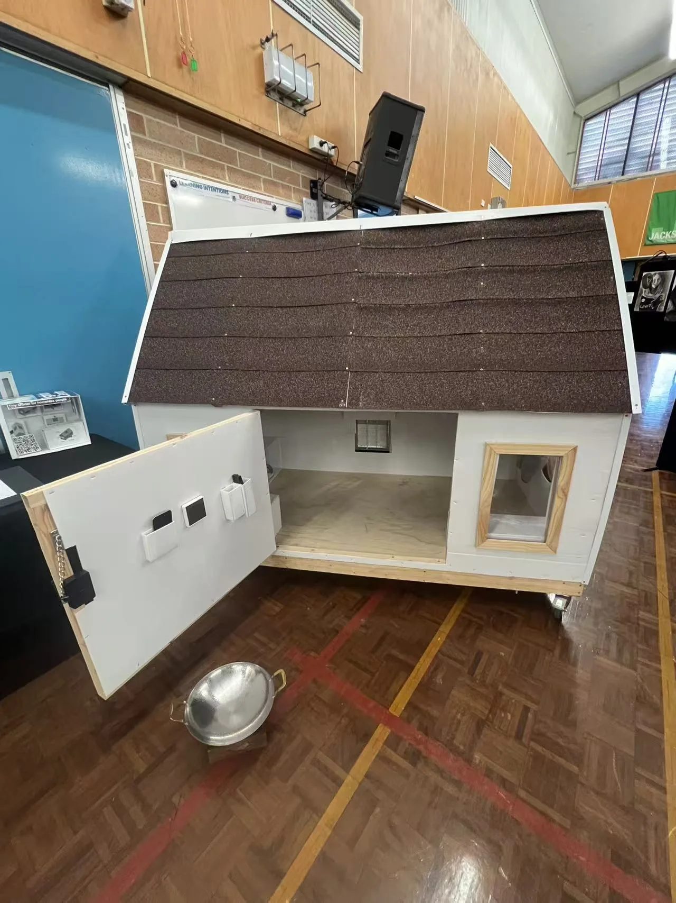
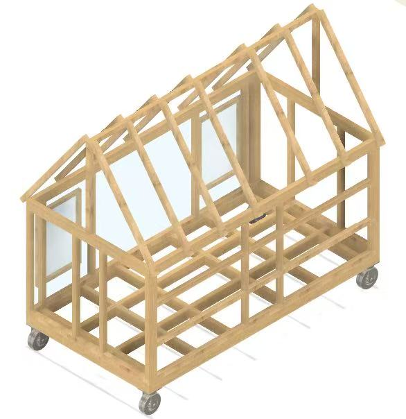
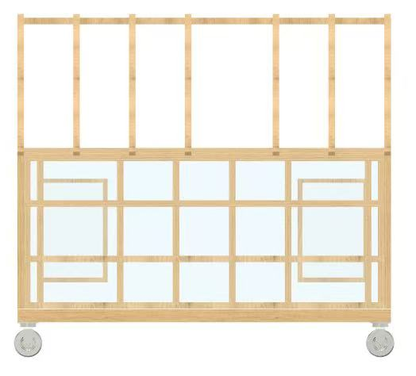
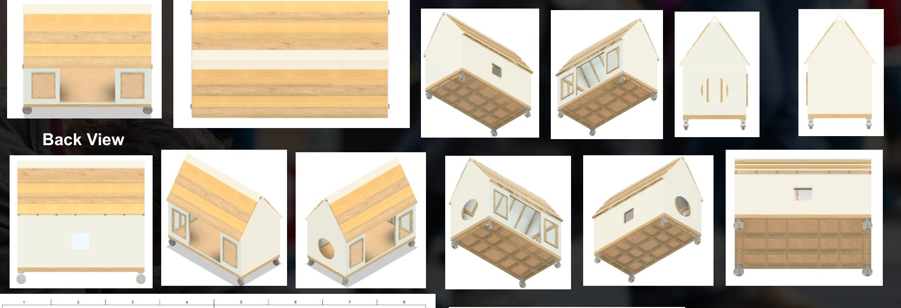
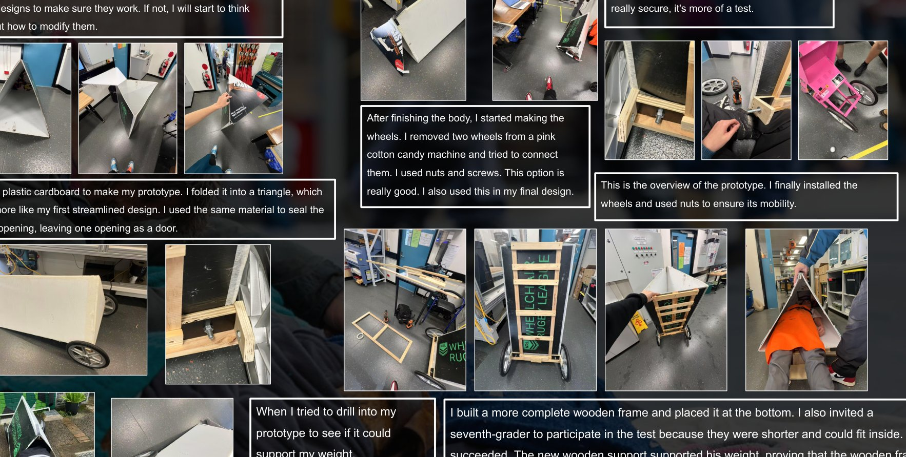
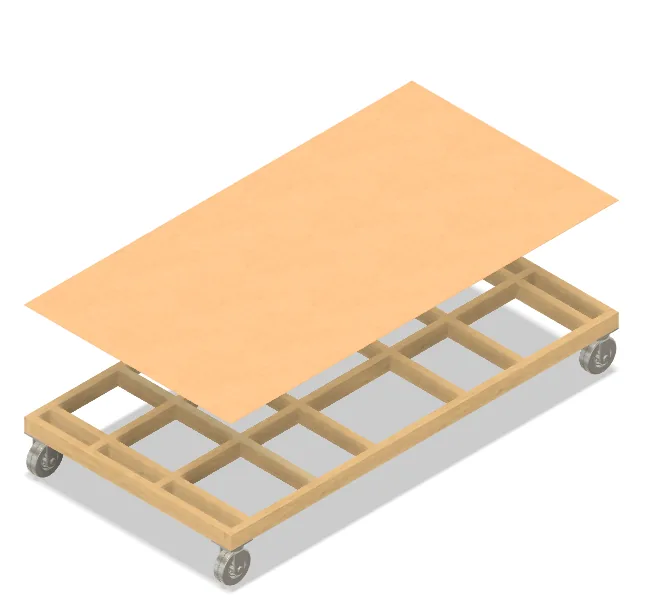
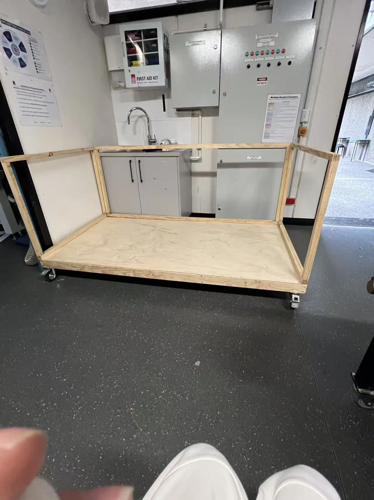
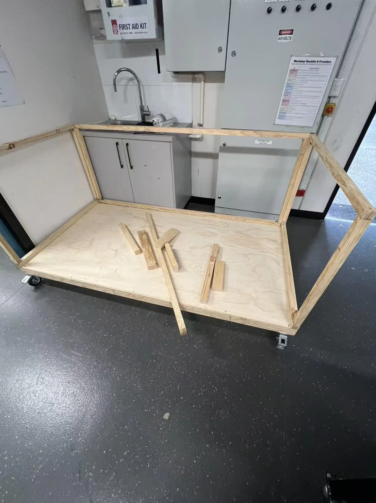
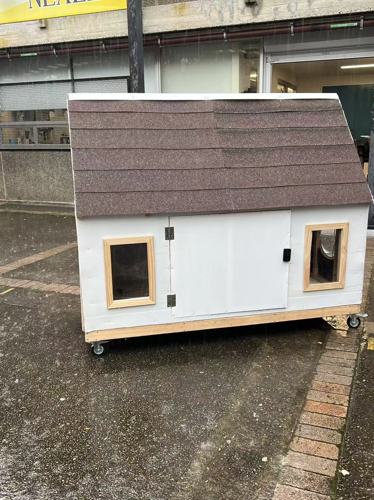

← ALL PROJECTS
CASE STUDY 01 / 2025
DESIGN & TECHNOLOGY · HSC MAJOR WORK
Tiny Homeless
Tiny Homeless
Shelter.
Making the idea of a compact, mobile shelter tangible through a timber prototype, careful framing and practical detailing.

01 / FINAL PROTOTYPE
DETAILS FROM THE ORIGINAL 40-PAGE HSC FOLIO
3 sections
BOLTED BASE / BODY / ROOF
4 castors
MOBILE BASE WITH BRAKES
Corflute
INTERIOR / EXTERIOR PANEL MATERIAL
Solar lighting
FINISHED PROTOTYPE FEATURE
The original folio documents decisions about modularity, rain protection, framed acrylic openings, roof shingle attachment and a smart lock. The 3D workshop illustrates the assembly logic but is not a safety-tested or construction-certified design.
INTERACTIVE
/ OBJECT EXPLORER
Drag to rotate · Scroll or pinch to zoom · Select a feature
V6 / SOURCE-DOCUMENT RECONSTRUCTION
Walk through the design.
Original HSC Design & Technology folio evidence now guides the three-part bolted shelter structure. Assemble the wheel base, wall body, gables, windows and roof yourself.
3D / INTERACTIVE STUDY
Explore the project in 3D
A lightweight 3D interpretation based on original project photographs. Not the original Fusion 360 file or a measured engineering drawing.
3D graphics are unavailable in this browser. The original project photograph is shown instead.

BUILD LAB ·
0/5
SELECTED DETAIL
01 / INTRODUCTION
Roof & envelope
The physical prototype has a pitched roof finished in a dark shingle-like surface. The roof can be hidden to explore the timber structure.
Controls: arrow keys rotate, + / − zoom; in assembly mode select a labelled part and choose Snap selected, or drag it into place. Undo reverses the last assembly action.
An interpretive 3D reconstruction grounded in Dennis Tan’s 2025 HSC folio, drawings and construction photos. Part placement uses simplified grouping and snap positions. Not exact Fusion 360 geometry, build instructions, or a certified model.
BUILD IT YOURSELF · INTERACTIVE 3D
Assembly workshop
Move components by dragging. Release close to the outlined target for magnetic snap. Select another part to continue.
Tip: select a part, then drag directly in the 3D scene. Use Orbit camera to change your view. Keyboard users can select a component and choose Snap selected. Assembly is illustrative, not a construction instruction.
ORIGINAL DESIGN REFERENCES
Reference renders supplied by Dennis Tan, used to guide the refined 3D interpretation. They remain distinct from the interactive reconstruction.





Source: Dennis Tan, Design & Technology Major Work folio, 2025. Engineering images are original student material; original design drawings, not certified plans.
Built evidence first. Use the model to explore form, then compare it with the original workshop photographs and design-stage CAD images below.
01
/ THE BRIEF
Small in size.
Small in size.
Purpose in mind.
The Tiny Homeless Shelter began as a Design & Technology major work exploring a compact shelter concept for people experiencing homelessness. The project combined modelling, timber construction and practical features in a movable physical prototype.
The finished structure includes a wheeled timber base, pitched roof, framed windows, a hinged access door with a keypad-style lock, and a warm illuminated interior. These features are documented in the photographs and short walkthrough videos.
This is a school design prototype. No claim is made that it has been certified or approved for permanent residential occupation.
02
/ DIGITAL TO BUILT
Use the slider to compare genuine project evidence, not a simulated finished image.
INTERACTIVE DESIGN COMPARISON
From model
From model
to
material.
The digital study describes the shelter’s form; the completed workshop prototype reveals the actual finish, openings and structural proportions.

Wheeled timber base
The prototype uses castor wheels below a timber platform. Both the CAD base study and the built model document this feature.
Wall and roof framing
The physical framework makes the transition from flat floor to vertical walls and a pitched roof visible.
Door, windows, light
Final photographs and walkthrough video show a hinged door, visible keypad, glazed openings and interior illumination.
02
/ DESIGN INTO CONSTRUCTION
From the first base frame through to the finished shell.
A process you can see.
01

Plan the base
Digital base-frame studies consider how the structure rests above ground on a wheeled support.
02

Build the platform
Timber members form a rectangular base and plywood floor, establishing the project's footprint.
03

Assemble the frame
Upright members and connecting rails define the walls before the roof structure is built.
04

Finish the enclosure
The final prototype brings together wall cladding, roof covering, windows, access and mobile base.
03
/ DETAILS THAT MATTER
Evidence of the design decisions visible in the final physical prototype.
Built features.
Wheeled base
Four castors are visible beneath the timber structure, supporting movement of the prototype.
Hinged entry and keypad
The front door opens outward; a keypad-style fitting is mounted at the door edge.
Windows and lighting
Framed windows and warm interior lighting are visible in the completed prototype.
Pitched roof
The roof structure progresses from timber rafters to a dark, shingle-like finished covering.
06
/ DESIGN EVIDENCE
Three details visible in the completed prototype, each supported by a photograph or short walkthrough.
Small decisions.
Built impact.
This school-scale prototype is a design exploration rather than an occupied, certified dwelling. The portfolio documents visible features and learning outcomes—not unverified weatherproofing or building-code compliance.
WATCH THE REAL WALKTHROUGHSThe moving base
Wheel-mounted timber platform to make the constructed prototype relocatable.
Visible access
Hinged front door, window openings and a keypad fitted to the finished exterior.
Interior demonstration
Warm lighting documented in real photographs and short video recordings.
04
/ MOVING IMAGE EVIDENCE
Two short real-life videos give context that still photos cannot provide.
See it in motion.
FILM 01 / APPROX. 16 SECONDS
Inside the shelter
A short interior walkthrough showing warm lighting, the interior floor area and built-in fittings.
Read video description
The camera travels through the prototype’s enclosed interior. Warm light illuminates the plywood floor and inner wall surfaces; the walkthrough shows the interior fittings and ventilation openings.
FILM 02 / APPROX. 16 SECONDS
Exterior walkthrough
A closer look at the finished cladding, roof shape, openings and mobile structure.
Read video description
The camera moves around the outside of the completed mobile shelter. A pitched dark roof, pale wall panels, timber-trimmed windows, hinged entrance and castor-mounted base are visible.
Videos document the actual school prototype. They start only when you press play; sound is controlled by the player.
05
/ REFLECTION
Learning by
Learning by
building.
Constructing a physical prototype made the relationship between design drawings, material dimensions and assembly order much clearer. Wall framing and pitched-roof geometry required a practical sequence: the base established the footprint, the walls established the enclosure, and the roof brought those pieces together.
The photographs demonstrate the value of checking each stage before adding the next. This experience supports my growing interest in how building projects are planned, coordinated and delivered.
Next case study: Resin River Table ↗